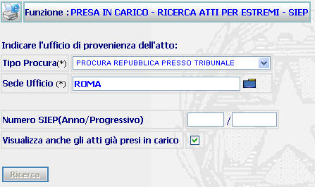
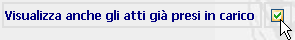
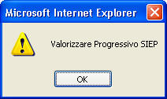

Presa in carico - Ricerca per atti SIEP: La funzione prescelta consente di prendere in carico atti trasmessi telematicamente dalle Procure.
LE MASCHERE VIDEO
La funzione in esame "RICERCA PER ATTI - SIEP," viene realizzata attraverso l'utilizzo della maschera che segue.

Nella maschera sono presenti due tipologie di campi: obbligatori e opzionali; i campi obbligatori sono contrassegnati con un asterisco.
COME FARE PER ...
| Per ricercare un atto che l'utente deve prendere in carico, oppure visualizzarne uno già preso occorre: |
1. Selezionare il tipo di Procura, che trasmette l'atto, dalla tendina.
2. Inserire o selezionare tramite la lista predefinita
la sede dell'ufficio che trasmette;
3. Nel caso in cui si vuole visualizzare anche gli atti già presi in carico selezionare la voce tramite la casella di spunta

4. Agire sul pulsante
per visualizzare la lista atti ricevuti .
CAMPI
I dati che consentono di ricercare un atto sono i seguenti:
| NOME | DESCRIZIONE |
| Tipo Procura | il sistema propone l'Ufficio Procura della Repubblica. E' possibile selezionare altra voce dalla tendina. |
| Sede Ufficio | inserire il comune interessato, oppure
selezionarlo tramite la lista predefinita
|
| Anno | Compilare il campo con l'Anno voluto in formato numerico "aaaa". |
| Numero SIEP | Compilare il campo con caratteri numerici. |
PULSANTI
Oltre al pulsante
 di stampa del contesto (videata)
di stampa del contesto (videata)
|
PULSANTE |
DESCRIZIONE |
|
|
A fronte di tale comando, il sistema visualizza la lista predefinita. |
BOTTONI
Oltre ai comandi funzionali relativi al menù verticale sono presenti i seguenti comandi:
|
COMANDI |
DESCRIZIONE |
|
|
A fronte di tale comando, il sistema, dopo aver verificato la validità dei dati specificati, ricerca l'atto. |
CONTROLLI
Azionando il bottone di
 , il sistema verifica che i campi
obbligatori siano stati correttamente compilati, e, che l'atto esiste nelle
trasmissioni telematiche.
, il sistema verifica che i campi
obbligatori siano stati correttamente compilati, e, che l'atto esiste nelle
trasmissioni telematiche.
Se non riscontrerà incongruenze verrà visualizzata quanto richiesto, altrimenti presenterà i seguenti avvisi:
| nel caso di non presenza di atti |
|
nel caso di dati mancanti, indicando qual'è il dato come ad esempio: |

